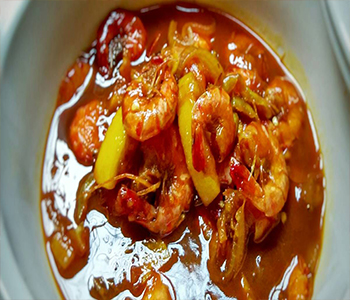

Bahan:
- 500 gram udang segari
- 3 papan petai
- 50 gram cabai keriting
- 50 gram cabai besar
- 7 siung bawang merah
- 5 siung bawang putih
- 1 siung bawang bombay
- 1 buah tomat besar
- 1 cm lengkuas (boleh tidak pakai)
- secukupnya Garam dan gula
- secukupnya Bubuk kaldu
Cara Membuat:
- Udang di lumuri perasan jeruk nipis agar tidak amis, sisihkan
- Haluskan bumbu seperti bawang merah, bawang putih, cabai keriting dan besar
- Tumis bumbu halus dengan minyak masukan juga lengkuas
- Setelah harum masukan petai terlebih dahulu, kasih air secukupnya dan aduk sebentar
- Lalu masukkan udang dan tomat segar
- Bubuhkan garam, gula, dan bubuk kaldu secukupnya.
- Tunggu mendidih lalu sajikan.
- Jangan kelamaan memasak udang agar udang tidak keras. Selamat mencoba